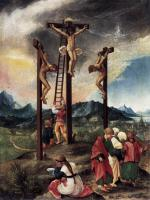

| The Beheading of St. Catherine
1505-06
|
 | Stigmatisation of St Francis
1507
|
 | Penitence of St Jerome
1507
|
 | Martyrdom of St. Sebastian
1509-16
|
 | The Arrest of Christ
1509-16
|
 | Rest on the Flight into Egypt
1510
|
 | St George
1511
|
 | Christ on the Cross between Mary and St John
1512
|
 | Nativity
1513
|
 | The Entombment
1516
|
 | The Resurrection of Christ
1516
|
 | Communion of the Apostles
1516-18
|
 | The Flagellation of Christ
1518
|
 | Christ in the Garden of Gethsemane
1518
|
 | The Beautiful Virgin of Regensburg
1519-20
|
 | Mary with the Child
1520-25
|
 | Christ Taking Leave of His Mother
1520
|
 | Christ on the Cross
1520
|
 | Capture of St. Florian
1520
|
 | The Birth of the Virgin
1525
|
|  | Crucifixion
1526
|
 | St Florian Taking Leave of the Monastery
1530
|
 | The Martyrdom of St Florian
1530
|
 | Schöne Maria
|